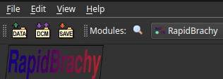
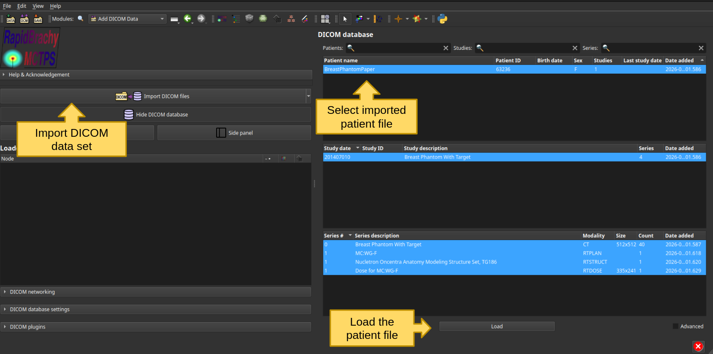
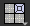
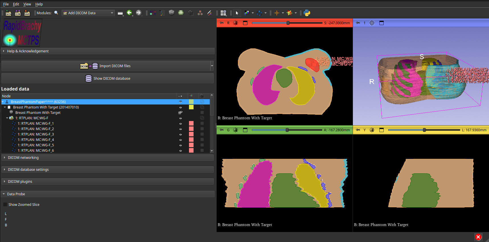

Loading and Viewing Data
Loading DICOM Data
You can import DICOM files by clicking File then Add DICOM Data or by clicking the DICOM Module widget just below the Edit tab.

This opens the DICOM Module, where you can import DICOM files and access your DICOM database. Click Import DICOM files, select your files, and import them into the database. The database maintains a cached list of patients that can then be loaded into the visualizer.

Viewing DICOM Data
The TPS displays three orthogonal views by default. To change the layout, click the grey square icon in the module tab

and select the desired view; the default layout is Four-Up.You can scroll through image slices using the mouse wheel. To pan the image, click and hold the mouse wheel and drag (or hold Shift + left click and drag). To zoom, right-click and drag.
